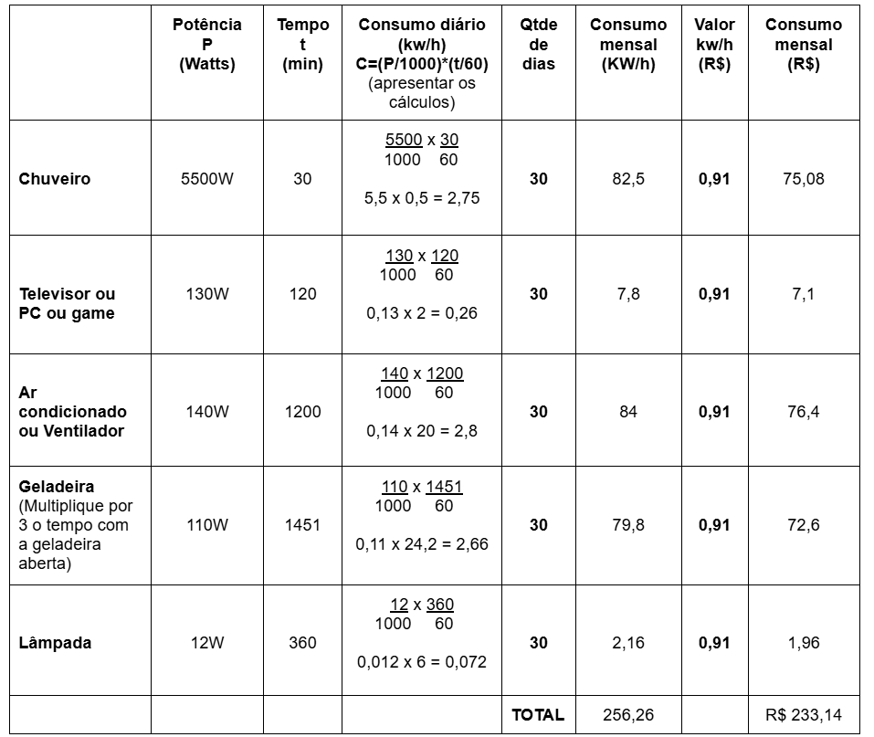

Tabela de Cálculo de Consumo Mensal em Reais (R$)
Nesta tabela, foram utilizados os conhecimentos de Função do Primeiro Grau e operações de divisão e multiplicação com números decimais.

Voltar ao Topo
Nesta tabela, foram utilizados os conhecimentos de Função do Primeiro Grau e operações de divisão e multiplicação com números decimais.
